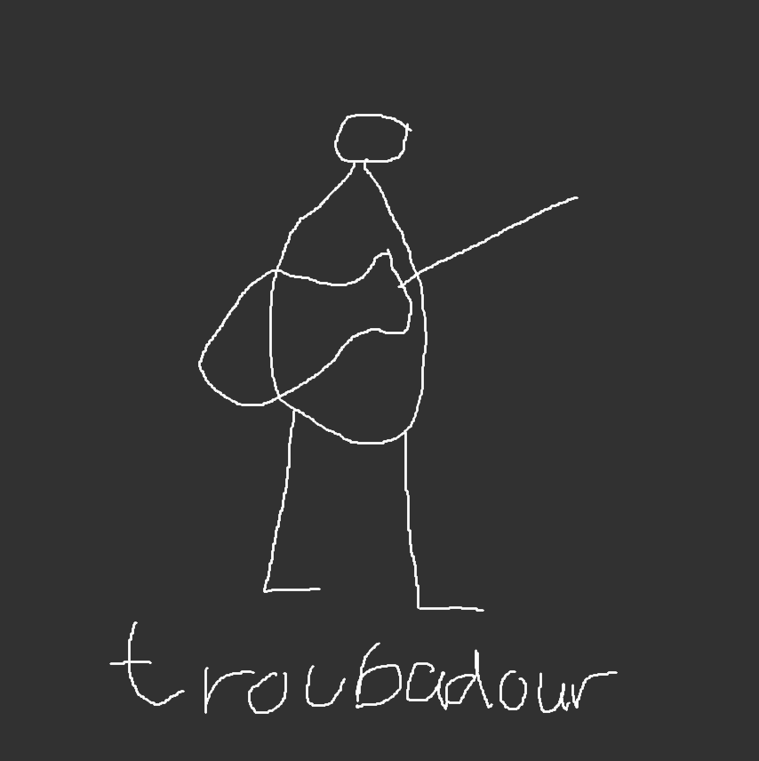

Quick-Start Guide
I'm attending a Party
- Enter Preferences- Swipe to the "Enter Preferences", search for the music preferences your wish to be included at a party, then enjoy the party!
I'm hosting a Party
- Quick-Start Playlist Generation- Simply clicking "Generate Playlist" from "Home" will gather nearby preferences, then redirect you to Spotify.
- Advanced Playlist Generation- Swipe to "Host Settings", where you are able to view other users' "Nearby Preferences" and your personal "Blacklist", after filtering your "Nearby Preferences", swipe back the "Home" and click "Generate Playlist", then be redirected to Spotify.
- Nearby Preferences- Your "Nearby Preferences" will be displayed in a list. After selecting one or more preferences, a "Trash Can" will appear at the top. By clicking the "Trash Can" you can selectively filter preferences that you do not wish to include in the playlist generation.
- Blacklist- Your "Blacklist" will be displayed as a list. Preferences can be added to your "Blacklist" that you do not wish to be included in any playlist you host and will be reflected in your "Nearby Preferences" as well.